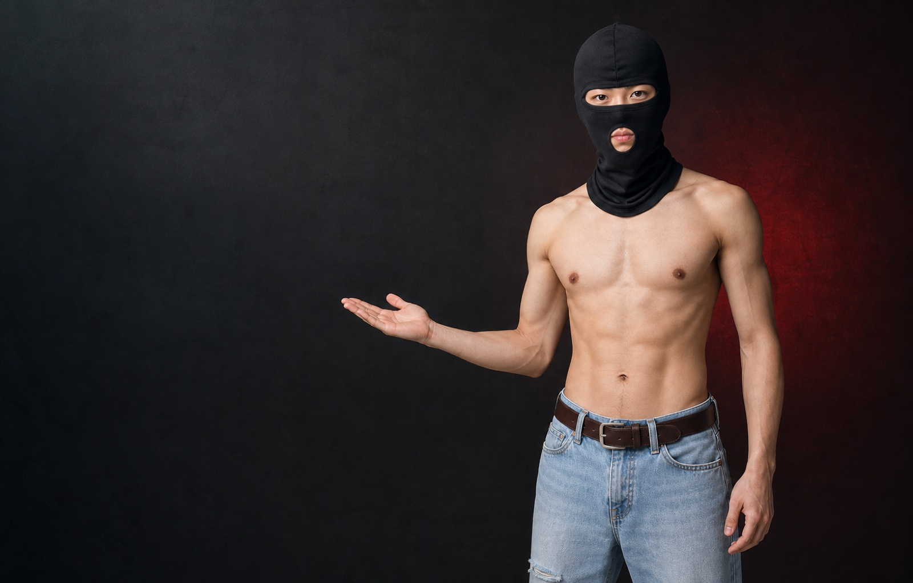
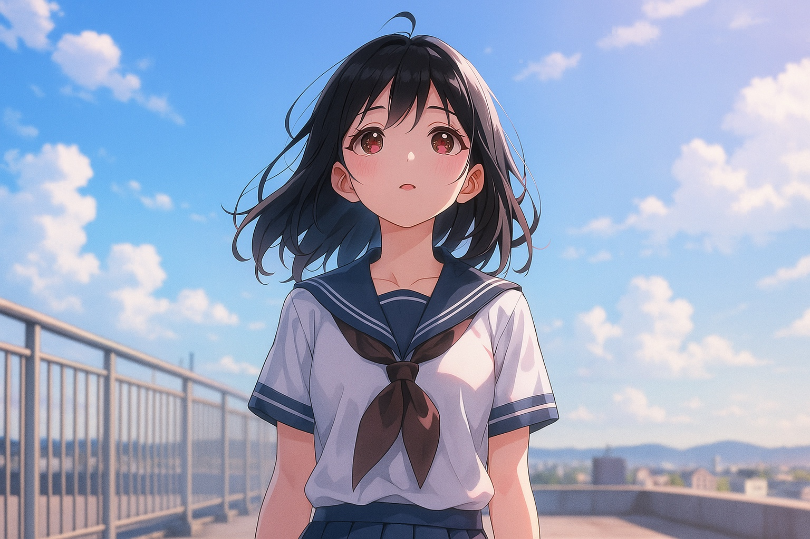
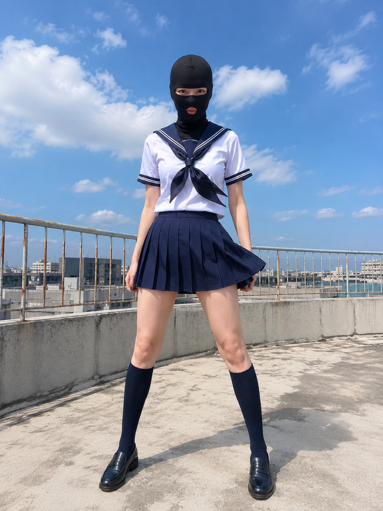
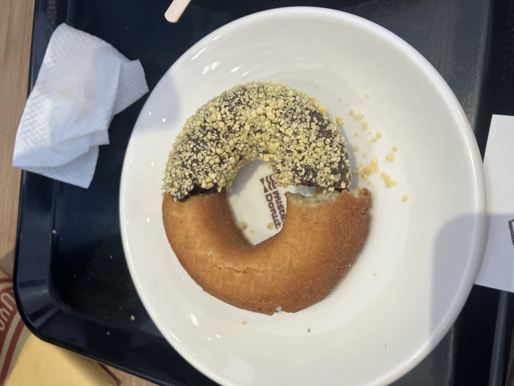
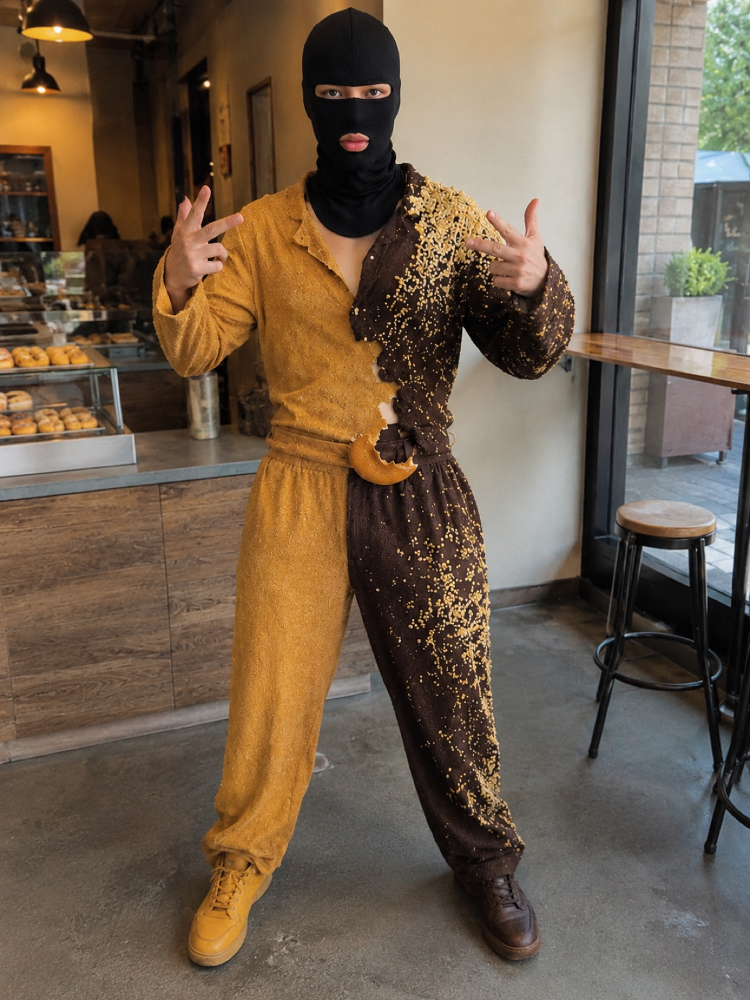
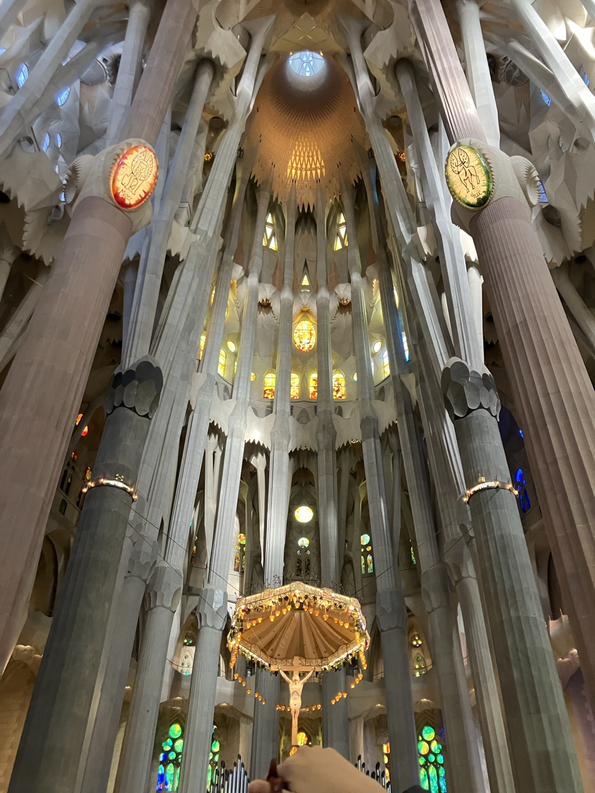
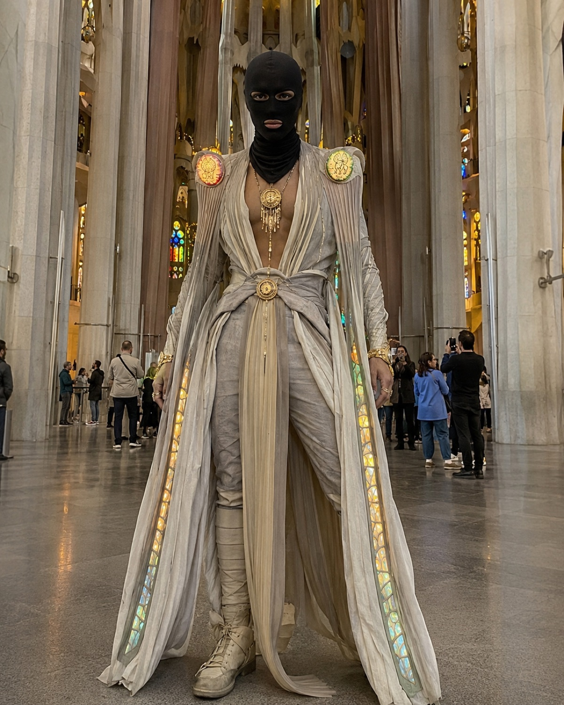
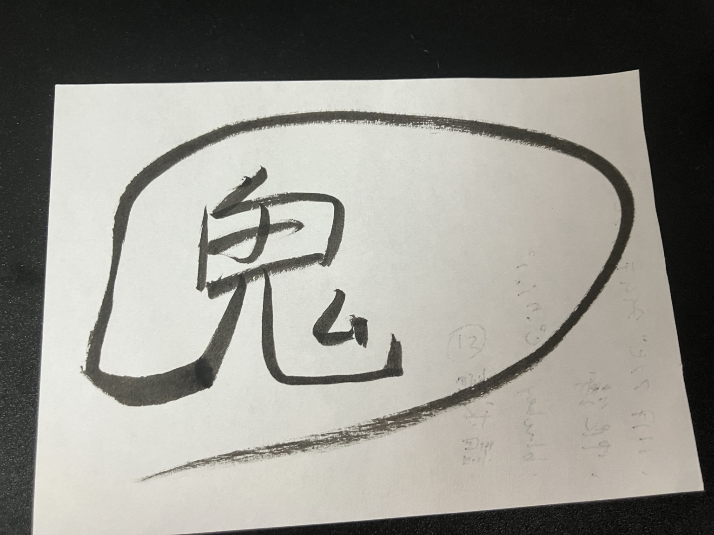
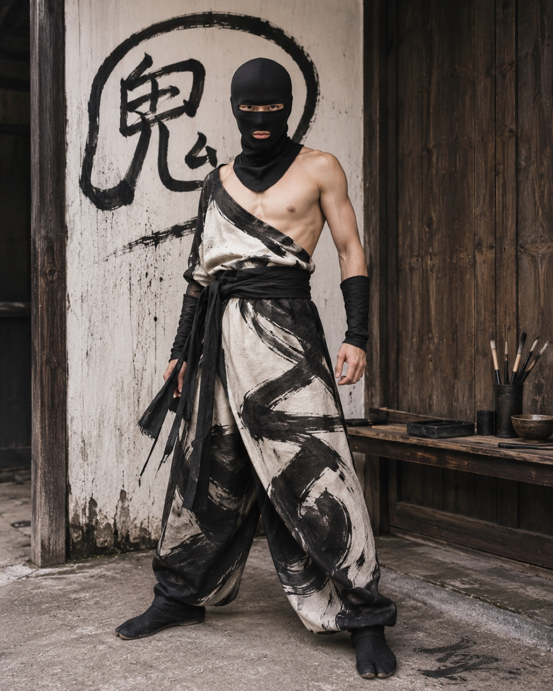
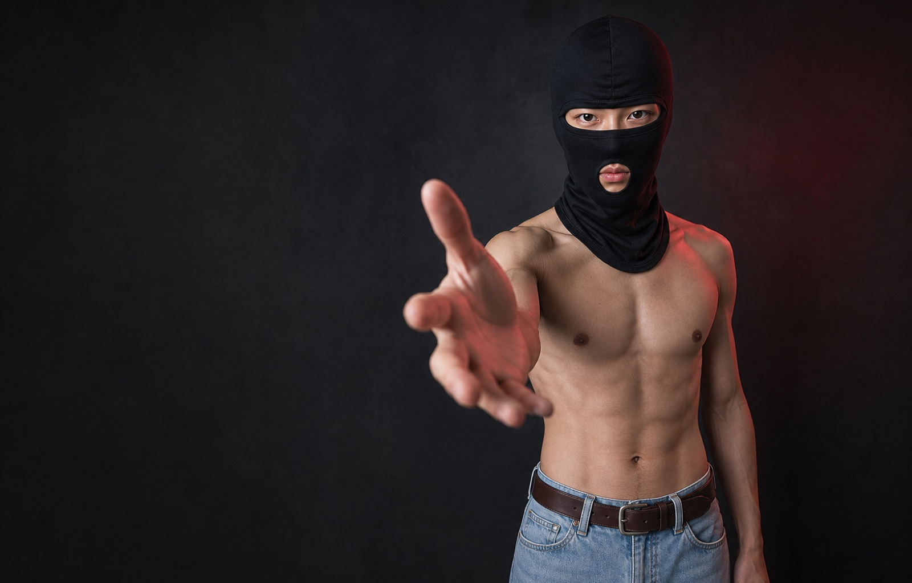

好きな画像を選ぶ
人物、食べ物、建物、イラスト、手描きの文字。何でもOK。
FREE IMAGE GENERATION PROMPT
好きな画像を1枚選んで、このプロンプトと一緒に画像生成AIへ。食べ物も、建物も、イラストも、デスゲイズに変わります。
ChatGPT・Geminiなど、画像を参照できる生成AIで使用できます。

HOW TO USE
人物、食べ物、建物、イラスト、手描きの文字。何でもOK。
下のボタンから全文をコピーして、画像と一緒に送信。
元画像の特徴を受け継いだ、唯一のデスゲイズが完成。
BEFORE / AFTER
元画像の色、形、質感、空気感を拾いながら、人間の衣装と背景へ再解釈します。


画風と制服の要素を、現実的なスナップ写真へ。


チョコと生地の配色、トッピング、欠けた形まで衣装化。


柱のシルエットとステンドグラスを、荘厳な衣装へ。


荒々しい筆跡と和の空気を、墨染めの装束へ。
THE PROMPT
画像を「Image A」として添付し、以下の英文を一緒に送ってください。AIや生成タイミングによって結果は変わります。
Use Image A as the main reference for anthropomorphizing the subject into a human character.
Create a single finished image, not a character sheet, not a turnaround sheet, and not multiple panels.
Transform the subject in Image A into a fully realized human character while preserving the subject’s most recognizable identity markers: overall mood, visual motifs, signature shapes, distinctive proportions, textures, color relationships, symbolic features, and personality. Reinterpret those qualities naturally into human form through costume design, physical silhouette, styling, accessories, body language, and surface details.
The final character must feature a very specific black head mask as a fixed defining element, described as follows:
The mask is a tight, matte black fabric full-head covering made from smooth stretch material, similar to a balaclava. It completely covers the entire head, sides of the face, scalp, ears, jawline, and neck. The fabric continues downward below the chin into an extended neck covering, forming a soft draped cowl-like section that wraps the throat and drops to the upper chest / base of the neck. The mask must feel thin, flexible, close-fitting, and minimal, not bulky or armored.
The facial opening layout is extremely important:
- one narrow horizontal eye opening across the upper face, exposing both eyes
- the bridge and full structure of the nose remain covered
- one separate smaller mouth opening centered on the lower face
- the mouth opening reveals the lips area only
- the eye opening and mouth opening must remain clearly separated by covered fabric
- no exposed hair, no exposed ears, no exposed nose, no extra holes
The mask design must remain minimal and iconic:
smooth matte black fabric, subtle seam structure only if needed, no tactical attachments, no zippers, no branding, no goggles, no helmet elements, no respirator parts, no metal parts, no patterns, no decoration, no redesign.
Create the completed anthropomorphized character as a dynamic front-facing full-body image, but make the overall result feel like a realistic amateur photo taken by an ordinary person, not a polished commercial artwork. The character should face the camera directly with a bold and energetic pose, but the image should look like a spontaneous real-life snapshot rather than a staged studio shoot.
The photography style should feel natural, casual, and believable:
smartphone photo or simple consumer camera look, real-life proportions, natural skin texture, subtle imperfections, ordinary lens perspective, slightly uneven framing, mild handheld feeling, soft natural blur if appropriate, realistic shadows, normal environmental lighting, and believable material textures. Avoid the glossy, hyper-detailed, over-rendered, cinematic AI look.
Do not make it look like a movie poster, fashion editorial, or premium key visual. Instead, make it feel like a candid but striking photo of a real person in costume, captured in a believable moment. The character should still be visually strong, but the image should feel grounded, human, and casually photographed.
The body styling should feel lean, striking, and visually memorable. The outfit and physical design should be driven by the anthropomorphized traits of Image A, but the black mask remains a mandatory design anchor. If appropriate, the upper body may be shirtless or minimally styled, as long as the result feels natural, cohesive, and believable in a real-world photo.
Automatically generate a background that is specifically designed to match the completed character. The background should feel like a real place that naturally suits the character’s identity, mood, materials, and origin. It should not be a generic studio backdrop. It should look like a plausible real-world environment where this person could actually be photographed. The background should support the character while remaining secondary, with realistic depth, ambient detail, and natural atmosphere.
Use realistic lighting, believable textures, grounded proportions, natural color, and an authentic everyday-photo feel. The final image should feel like a real amateur photograph of a unique anthropomorphized person, not a synthetic or overly polished AI-generated hero shot.
Priority order:
1. Preserve the anthropomorphized identity and recognizable motifs of Image A.
2. Reproduce the black mask exactly as described in this prompt.
3. Generate a realistic background that naturally matches the final character.
Avoid: character sheet layout, front/side/back views, multiple poses, multiple characters, text, labels, logos, diagrams, dramatic studio lighting, glossy cinematic finish, perfect poster composition, ultra-clean fashion styling, exaggerated VFX atmosphere, clutter that distracts from the subject, comedy styling, chibi proportions, simplified cartoon anatomy, inaccurate mask structure, exposed hair, exposed nose, helmet-like redesigns, tactical mask reinterpretations, or unnecessary props.WHERE TO USE
各サービスの画像生成・編集機能、利用条件、提供状況をご確認ください。本サイトはOpenAI社・Google社とは関係ありません。
FAQ
使えますが、検証に使った英語原文をそのまま送る方法をおすすめします。
同じ内容でも生成結果には幅があります。もう一度生成するか、プロンプト内のマスク指定を削らずに再送してください。
技術的には幅広い画像で試せます。ただし、他者の著作物や人物写真は権利・プライバシー・各AIサービスの規約を確認して利用してください。
このプロンプトは自由に試せます。生成画像の利用条件は、使用したAIサービスと入力画像の権利条件に従ってください。
